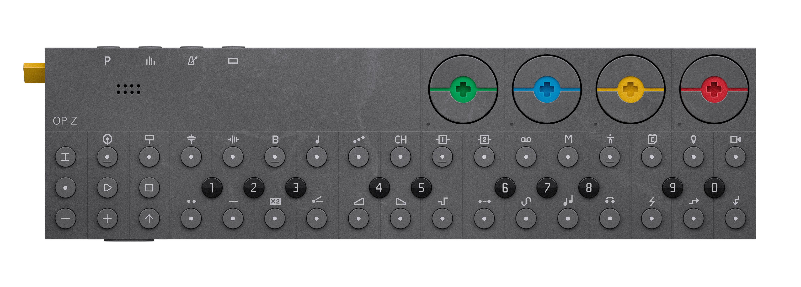

OP–Z is an advanced fully portable 16-track sequencer and synthesizer, with a range of both sample based and synthesis based sounds. it's the world's first stand-alone sequencer of its kind, that lets you sequence music, visuals, lights and more.
OP–Z can be used completely stand alone and comes with an intuitive led lit interface. when you want next level real time visual feedback, use the screen you already have in your pocket*.
